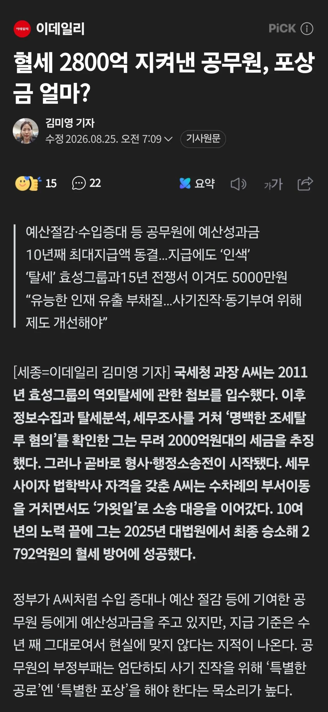

꼴랑 5천만원

꼴랑 5천만원
훈장 ㅇㅈ
포상금이 중요한게 아니라 공무원은 업적작이 중요한거임
이제 저 사람은 서기관 고위공무원 되는거고
퇴직하면 경력을 토대로 운신의 폭이 넓어짐
공무원에게는 그것이 큰 자산임
그래도 그건 저 공무원 개인적으로 봤을 때고 사회적으로 봤을 때 포상금을 5억 50억 500억 주면 이런 사례가 더 느는 거 아님?
공무원에게 포상금을 많이 주면 오히려 불필요한 논란이 생김
더도말고 5억만 줘도 불편한 사람들 댓글 존나 달릴걸
수억 수십억씩 포상금을 주면 국세청으로 따지면 결정세액 수천만원짜리, 수억원짜리 탈세는 포상금 수십만원, 수백만원이고 심지어 대부분의 업무는 포상도 없을 통상적인 일일텐데 공무원들 그런 업무 다 내팽겨치라는 것과 같은 것임.
경찰로 따지면 잡법이나 일반인 피해주는 범죄자들은 냅두고, 화제가 되는 유명인이나 기업인만 캐고 다니라는 것과 같은 얘기임.
공공조직의 보상체계는 이미 백년도 넘게 관료제의 탄생과 함께 이어진 어려운 문제이긴 함.
업적작 하려는게 결국 돈 때문인데 포상금이 중요하지않다니 이건 뭔소리야 ㅋㅋㅋㅋㅋㅋㅋㅋ 공무원 왜 그만두냐? 결국 투입대비 나오는 돈 때문이야 돈ㅋㅋㅋㅋ
업적이 자산같은 소리하네
포상금 업적 필요없고 강등당해도 좋으니까 %포상금으로 크게 돈벌고 싶다.
공무원도 매달 실수령 300만 되도 때려치는 사람 95% 감소할걸.
저세끼들 잡아봐야 포상금 찔끔인데. 그냥 편하게 있으면서 뒤로 대접받고, 또 위에사 뒷배봐주는 사람도 생겨서 진급도 빠르고 하지. 누가 저렇게 싸우냐 ㅋㅋ
저렇게 싸우는 인간이 별종인거지 지금 시스템에서
이미 행시출신이라 서기관 고공은 열려있는데 뭔 ㅋㅋ
시도상선은 탈세 도와주고 부사장으로 갔잖아
돈으로 포상하면 안되고 명예만 생각할 사람이고 어쩌고 간에 포상을 획기적으로 늘려야됨
일 안해도 비슷한급수에 급여 공평하게 받으니까 일 안하고 바보처럼 사는게 이득이라는 사람이 계속나오잖아
영업직도 아니고 애초에 수익난만큼 돈주는 곳이 있기는 한가?
하이닉스?
신고포상은 대부분 해당금액대비로 포상금이 커지긴 함. 근대 상한이 있기도 함.
크고힘든업무인데 한번파면 인사이동하면서까지 처리해야댐. 보상 5,000만 앞으론 그냥 묻어두고 그시간에 재태크나 해야맞는거지 ㅋㅋㅋ
호봉도 낭낭히 올려줘야지
원래 해쳐먹는게 돈이되고 애국은 돈이 안되는 일임
저건 돈보고 한게 아니라 진짜 순수 사명감에 한거지 씨발 ㅋㅋㅋㅋㅋㅋㅋㅋㅋㅋㅋㅋㅋ
나거한~ 나거한~
계몽의 드럼을 울려라! 둥둥둥 둥둥둥🥁🥁🥁
솔직히 걷어들인 세수의 10% 줘도되지 않냐? 90% 세금걷은거면 개이득인데;
그 부작용이 큼.
공무원 업무 중에 저렇게 큰 포상액이 걸릴만한게 엄청 적고, 대부분의 업무가 눈에 띄지 않는 항상성이 중요한 일인데.
만약 저런 걸 너무 부각하고 포상을 크게 주면, 묵묵히 해야될 일 하는 공무원을 도태시키는 거고 한탕주의 혈안된 공무원들만 포상을 주는 것임. 그러다가 무고한 피해자들 양산되면 그건 누가 책임지겠음..
기업이야 프로젝트 성공시킨 팀 성과 측정이 쉽지만, 그럼에도 실패하는 것도 중요한 일이라서 포상으로 골머리가 아픈데 공무원 조직 같이 성과 측정이 어려운 일이 대부분인 경우 저렇게 눈에 띄는거 포상 크게해주면 부작용이 말도 안되게 큼.
그럼에도 5천만원보다는 상한이 더 컸으면 좋긴 하겠음. 1회성 보상만으로 그치는게 아니라 명예와 직무적인 보상도 보장되었으면 좋겠다는 생각함.
기업한테 뒷돈받는게 훨씬 큰 이득이네
애초에 동력이 금전이기 시작하면 취지에 안맞고 돈에 휘둘리는 일이 많지 안을까
금전적 지원보단 소송을 막아주는게 좋을거같은데
업무에 관한 소송은 이미 정부 법률공단이 있어서 따로 국가를 대변하는 변호인단이 구성됨.
공무상 업무 수행을 이유로 개인이 직접 소송을 진행하게 되는 경우는 없음. 그렇다 하더라도 담당자는 매우 괴롭고 지치고 힘들지.
그래서 나도 5천만원보다는 상한이 더 컸으면 좋긴 하겠음. 1회성 보상만으로 그치는게 아니라 명예와 직무적인 보상도 보장되었으면 좋겠다는 생각함. 퍼센티지는 말도 안되는 거고
아따 배우신분같은데
글 너무 잘써서 놀람…
아닙니다, 공부할게 많습니다. 같이 공부하시죠, 인생은 평생 공부하는 건가 봄
애초에 포상금이 다 짠 편이지
많이주면 그만둘듯
한 1퍼줘야하나
다음엔 내가 세금 도둑 해여지
효성 ㅋㅋㅋ
5천땡이면 저런사람한테는 모욕일수도있음
저정도면 훈장줘야된다
사실 진짜 포상은 저 첩보원이 받아가는게 맞긴함
찾아보니 '이임동' 씨
행시출신이신듯
▲81년 ▲경남 거창 ▲공주 한일고 ▲연세대 경영학과 ▲고려대 법학박사 ▲행시 48기
[출처] 조세금융신문 (https://www.tfmedia.co.kr)
와 세무사에 행시에 장난아니네
당연히 저사람은 포상의ㅡ금액이나 돈을 보고 한일이 아닌데
앞으로 저런사람이 계속 나오는 시스템을 만드려면 적절한 포상이ㅜ필요한거지.
공적시스템의 공무원 개인의 의협심이나 도덕성에 의존하면 안되는거 아닌가?
100건의 잘못된걸 보고 싸우는 1명을 바랄게 아니라 90명이 싸우게 만드는 시스템을 만들어야 하고 그건 포상임.